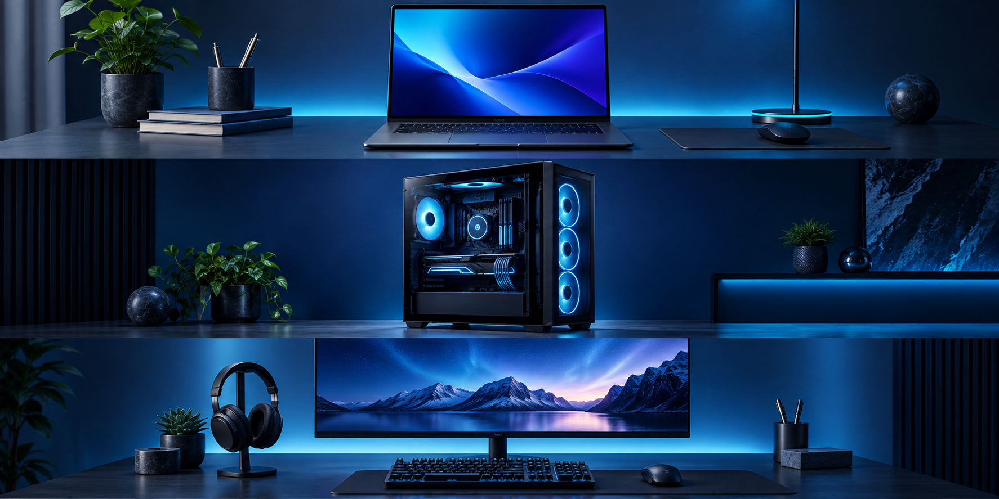

Хіт продажуAeroBook 14 Pro
Компактний ноутбук із якісним дисплеєм і автономністю на весь робочий день.
- CPU
- Core Ultra 7
- RAM
- 32 GB
- SSD
- 1 TB
12 моделей у каталозі
Порівнюйте характеристики, формат отримання й сценарії використання. Кожна картка веде до детальної сторінки пристрою.

Хіт продажуКомпактний ноутбук із якісним дисплеєм і автономністю на весь робочий день.
Збалансована конфігурація для ігор, стримінгу та роботи з тривимірною графікою.
Ультраширокий дисплей із точним кольором і зручним простором для кількох вікон.